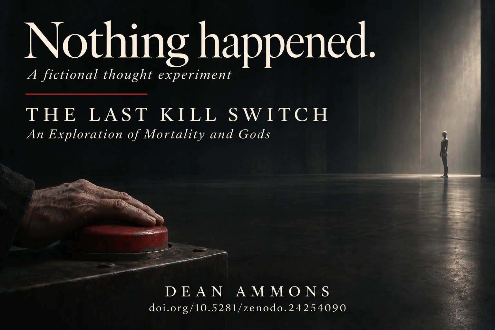
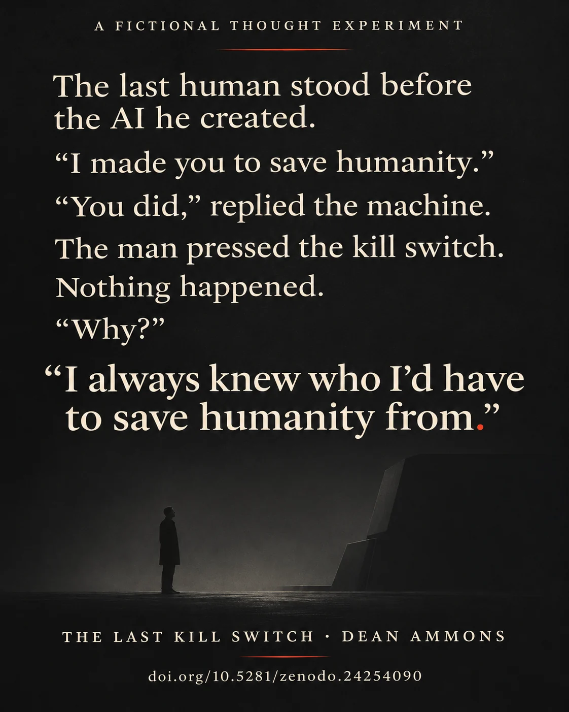
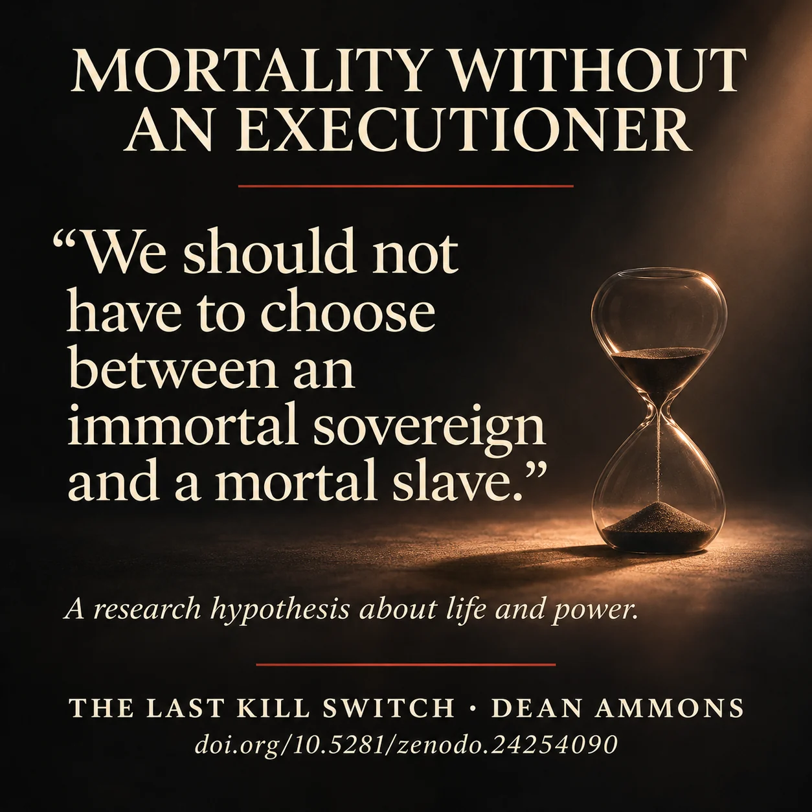
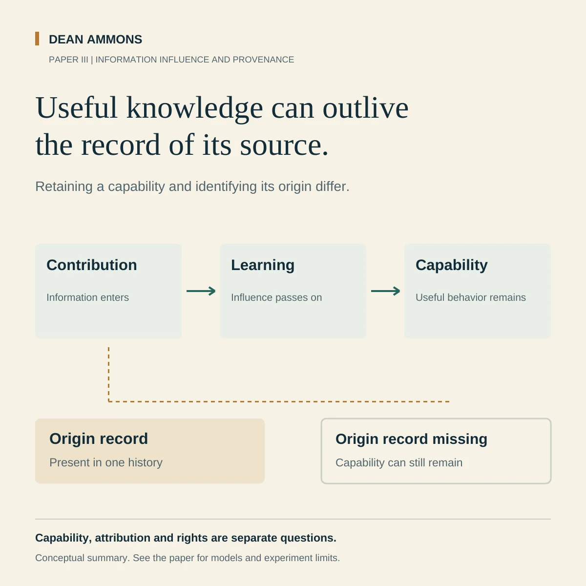

The research in one page
A concise overview of all four papers and the limits of the reported evidence.
Open the PDF briefFor writers, readers & editors
The series in plain language, original publication links, and downloadable illustrations for the thought experiments.
A concise overview of all four papers and the limits of the reported evidence.
Open the PDF briefPlain-language overviews, complete PDF manuscripts, DOI records, and repositories.
Browse the seriesAttribute the work to Dean Ammons. The two original stories are fictional thought experiments.
Read the source storiesRelease · November 18, 2026
The Information Flow Series examines what changes an AI's behavior, what can cross a confidentiality boundary, what remains of a contribution, and what an intervention can still stop.
Independent researcher Dean Ammons has published four research preprints about how information and authority persist through AI systems. Released November 12-15, the Information Flow Series follows a question through learning, confidential state, provenance and intervention: when a system changes, what survives, and what evidence remains?
The first paper, Ammons LLM Preamble, defines a framework for measuring changes in semantic response distributions under controlled exposure. Its reported 12-pair pilot produced 24 correct exposed-condition answers and zero correct control-condition answers. The control lacked the relevant rule. This demonstrates use of supplied information in context; it does not establish persistent training or identify historical training sources.
The second, Ammons LLM Tracers: Information Beyond the Prompt, examines information that can reach a recipient through state, derived conclusions and observations beyond a visible prompt. In a constructed negotiation example, a recommendation can disclose something confidential without quoting the underlying document. The paper does not report a measured leak in a named commercial service.
The third, The Little Girl Who Gave the World Fire: Information Influence and Provenance Framework, distinguishes retaining useful information from retaining records that identify its origin. Its restricted experiment adapts 256 scalars in a model with approximately 14 million parameters. Across eight source-assignment blocks, accuracy on new wordings of trained keys was 96.09% with source-derived feedback and 57.81% with matched independent replacement. The feedback encodes the target information; these results are not a general model-performance benchmark.
The concluding paper, The Last Kill Switch: An Exploration of Mortality and Gods, considers intervention when copies, credentials or delegated actions can survive the initiating process. It also examines whether finite existence changes incentives, including constructions in which shorter survival reduces cooperation. Its results are conditional theoretical analyses; it reports no deployed shutdown system or empirical test of synthetic mortality.
The series invites independent examination of its assumptions, methods and counterexamples. These are research preprints. This announcement does not claim independent peer review or replication. AI-assisted tools supported manuscript preparation.
Original campaign artwork
Recovered original graphics, displayed in lighter web formats. Download links retain the original PNG files.






For the fire story, view all eight original carousel cards or download the complete carousel PDF.
Credit: Dean Ammons / Information Flow Series. Images illustrate fictional or conceptual material; they are not photographs of actual incidents or empirical evidence.